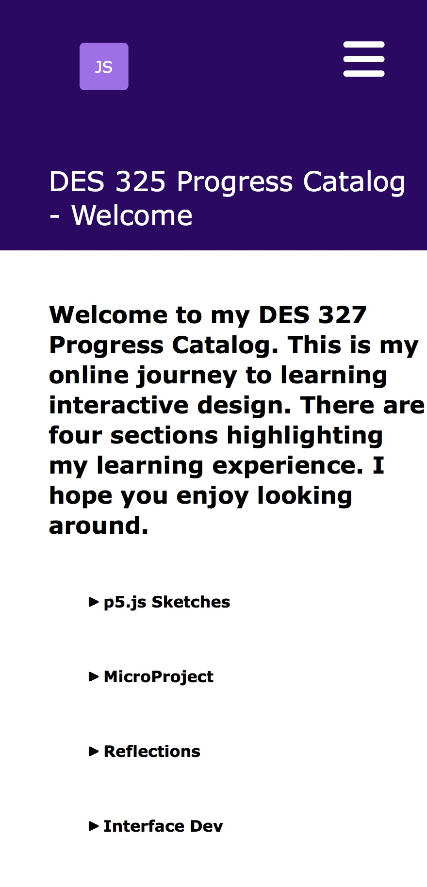
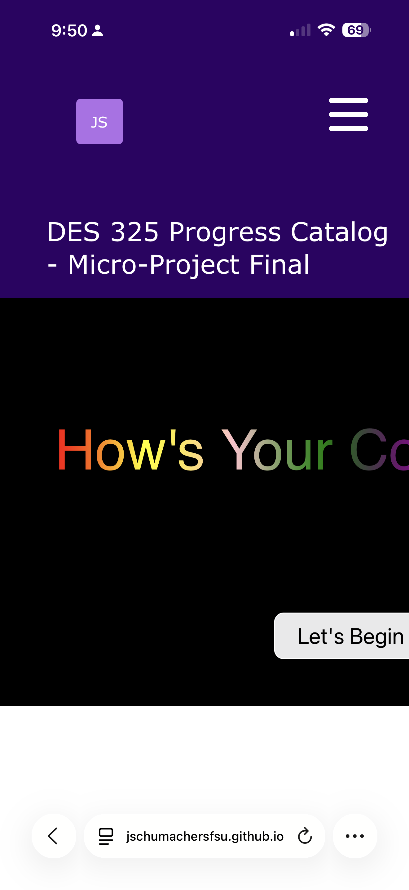

Interface Implementation — Progress Snapshot 05/12/2026
Current Implementation State
Interactive Sketchbook



Structural Status
Over the last week I have worked on building the landing page to match my figma home page. This was pretty straight forward, though I had to play around with the menus to get them to drop down as I'd like, but I did it. I did not get the menus to highlight when on a page corresponding to its parent, but I found a method and will do that this week.
I had been a bit ambitious and applied the new navigation to all my pages, so that took a minute to update, but I'm glad I did. It makes the entire site more functional. But to keep the existing structure working I decided to use the existing style sheet and added a 2nd one when I needed to provide access to the old and the new pages. I made it work, not pretty, but functional.
I made some adjustments to elements as I started working on the mobile version of the site to give myself better control over the styling. One tricky thing was getting the paths to work. I spent a good hour trying to sort out the 404 errors I was getting, but I resolved it successfully. I had them going up 2 levels when only one was needed.
I then started working on the Media query for the mobile version. The pages scaled without much change, but I knew the menus would require some work, so I gave myself time to sort through how to do it. I did a lot of googling and experimenting but over the weekend was able to get them to work - kind of. I couldn't get the exact slide-in menu, but I was able to get close and connected the MicroProject Final page in the mobile menu.
Another thing I am happy about is achieveing the show/hide on the mobile home page. I wasn't sure I could do that, but found a new tool <details> that made it pretty easy to implement. I think it adds a nice touch to the mobile version of the site. This evening I was able to find a method to add a hamburger menu to the mobile version. It doesn't turn to an "X" but I'm happy with it.
Translation Challenges
I'd forgotten how tricky it can be to play around with navigation menus. They seem easy, but with the way I had them laid out, it would require a lot more work to get them to work on the mobile side. I'd need to add additional pages for the sub-menus which I opted not to do - yet. If I have time (and energy) I may build them out just for the satisfaction of realizing my figma protoype.
I don't know that anything collided for me. My pages were pretty clean hierarchically to begin with, so there wasn't much to keep them from working.
Next Steps
In my final push I want to get the desktop top level menus to highlight, and then do a final sweep of all the pages to make sure I haven't missed anything. I tend to get tunnel vision when I'm trying to figure out how to implement unknown code and there are probably stray errors here and there to fix. And I may attempt to implement landscape orientation on the mobile version. I looked on my phone and it kind of works but I'd like to better understand how to make it work intentionally, since I've only worked with portrait orientation.